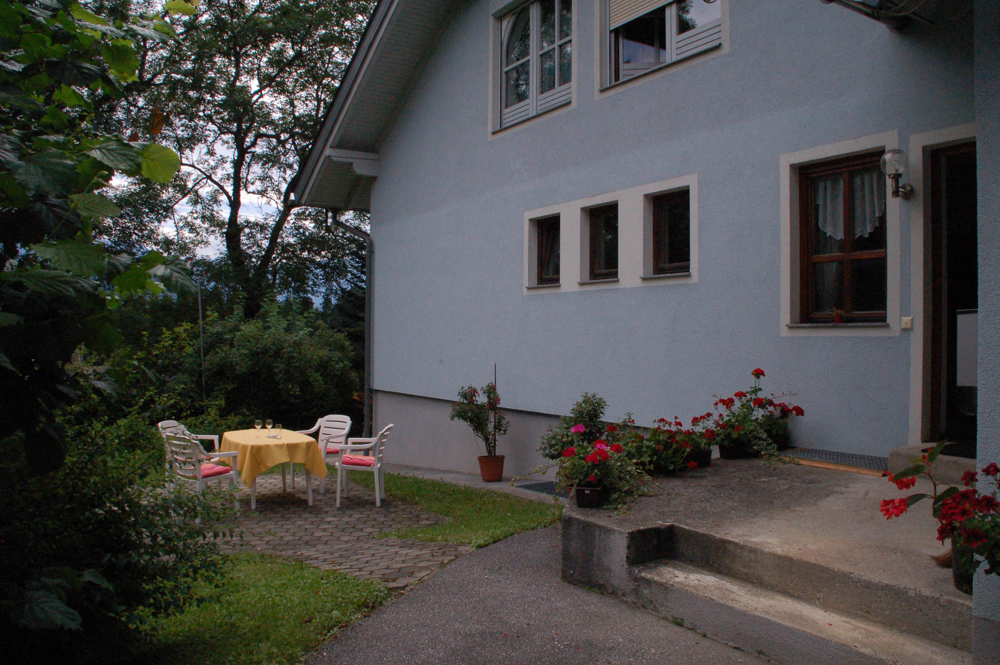
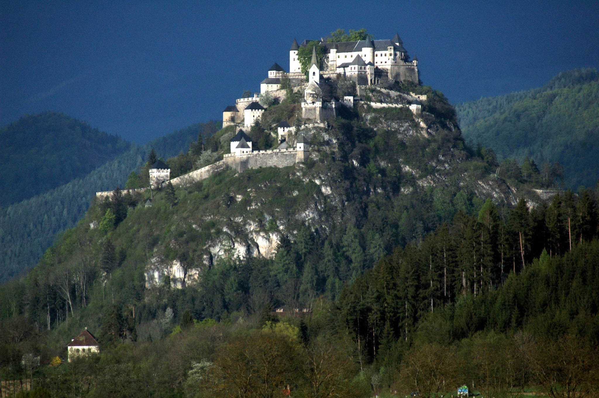

Ein Haus im Grünen
Auch wenn es ruhig gelegen ist, ist unser Haus nur fünf Gehminuten von Bus und Bahn entfernt.

Ein eigener Zugang zur Wohnung
Auf der dazugehörigen Terasse ist Platz zum entspannen.

Land der Burgen
Es gibt zahlreiche Möglichkeiten sich eine spannende Freizeit zu gestalten.